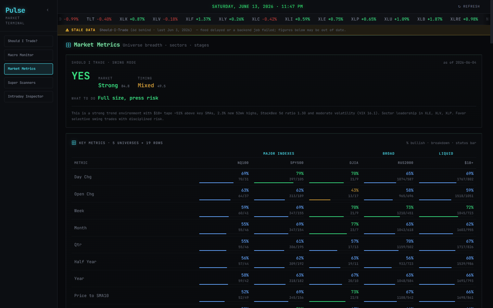

Market Metrics Dashboard
LiveA Bloomberg-style market terminal. A scheduled Supabase/Postgres pipeline (edge functions on pg_cron) pulls FRED, Finviz, and Yahoo data into database views; the React front end reads only from the DB — never third-party APIs at runtime. Macro monitor, market breadth, stage analysis, sector pulse, and a "Should I Trade?" quality score.
ReactTypeScriptTailwind
Supabase / PostgresEdge Functions
pg_cronVercel